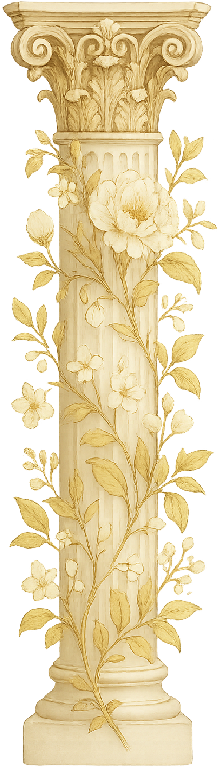
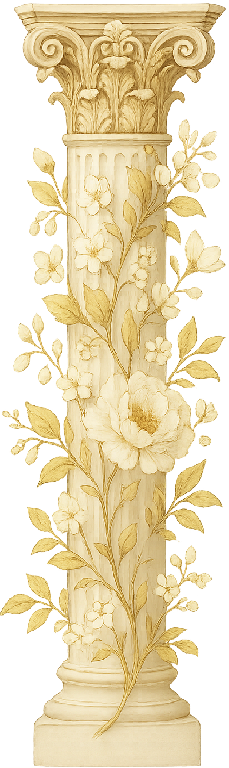
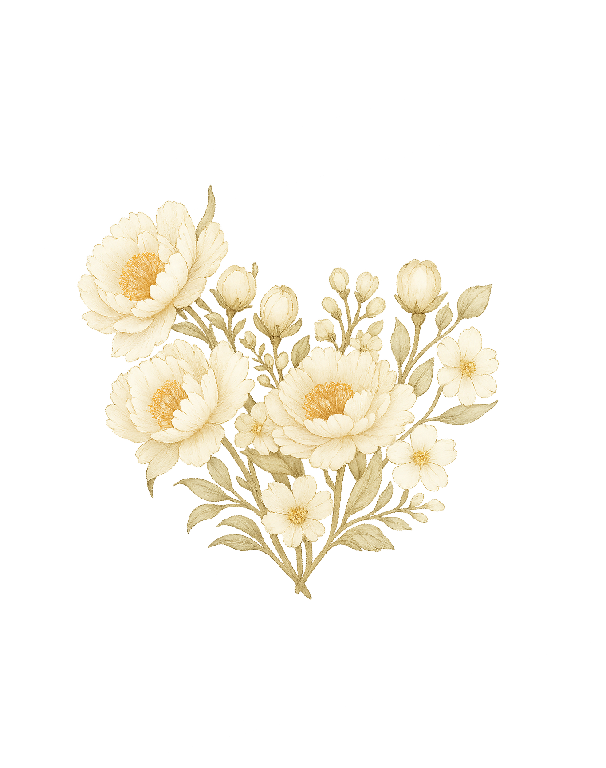
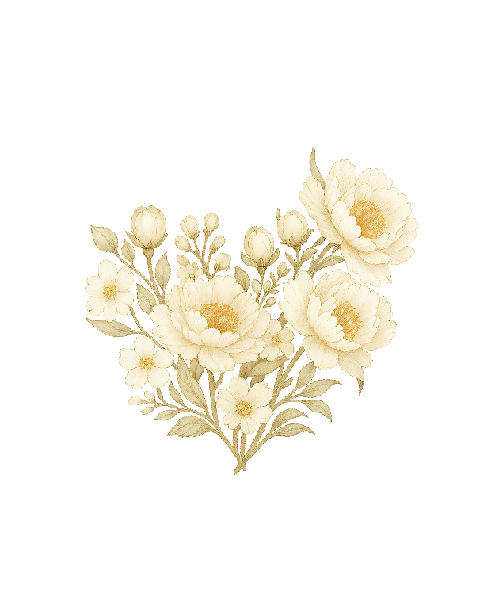
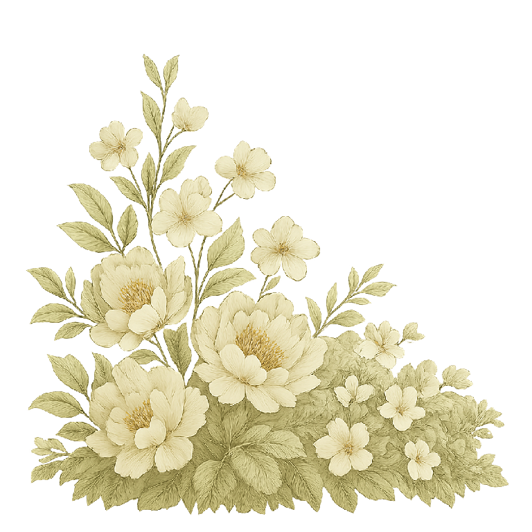
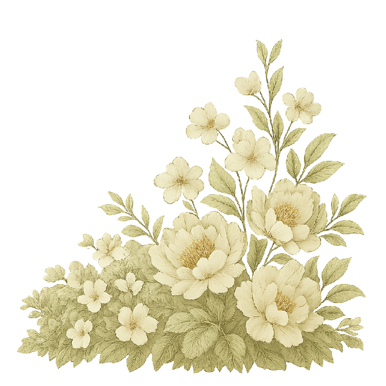
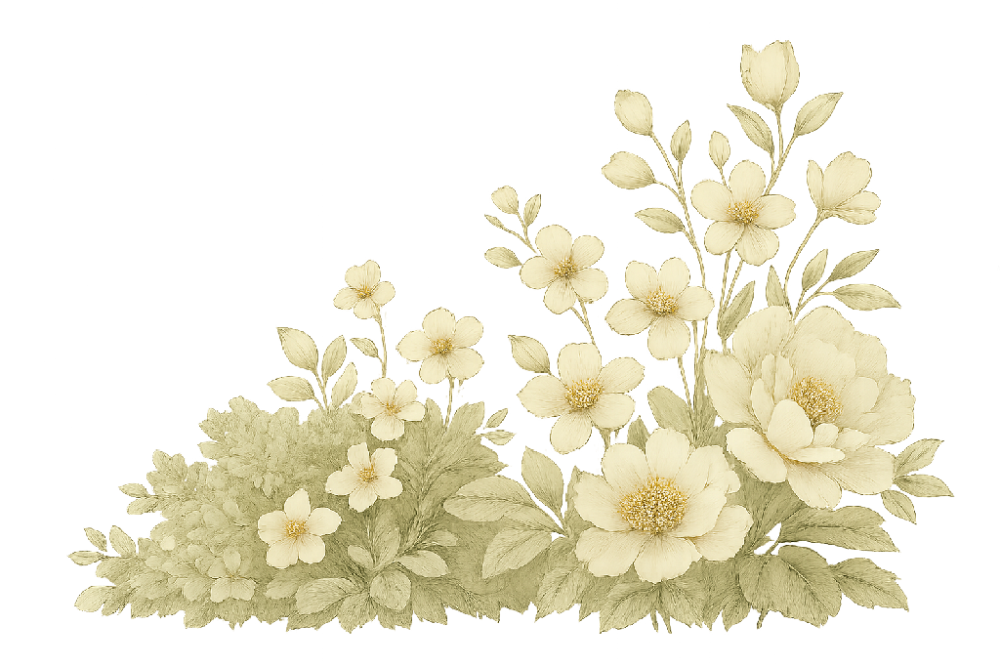
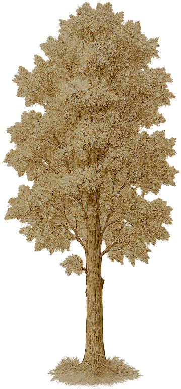
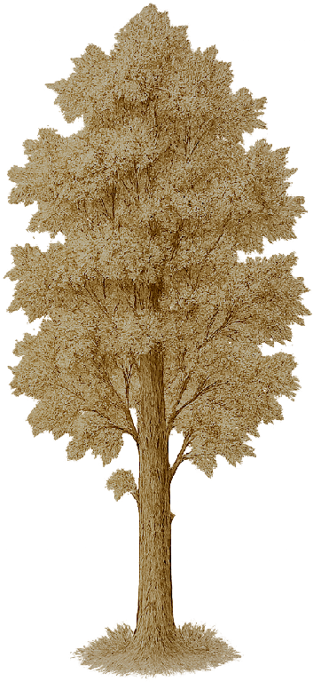
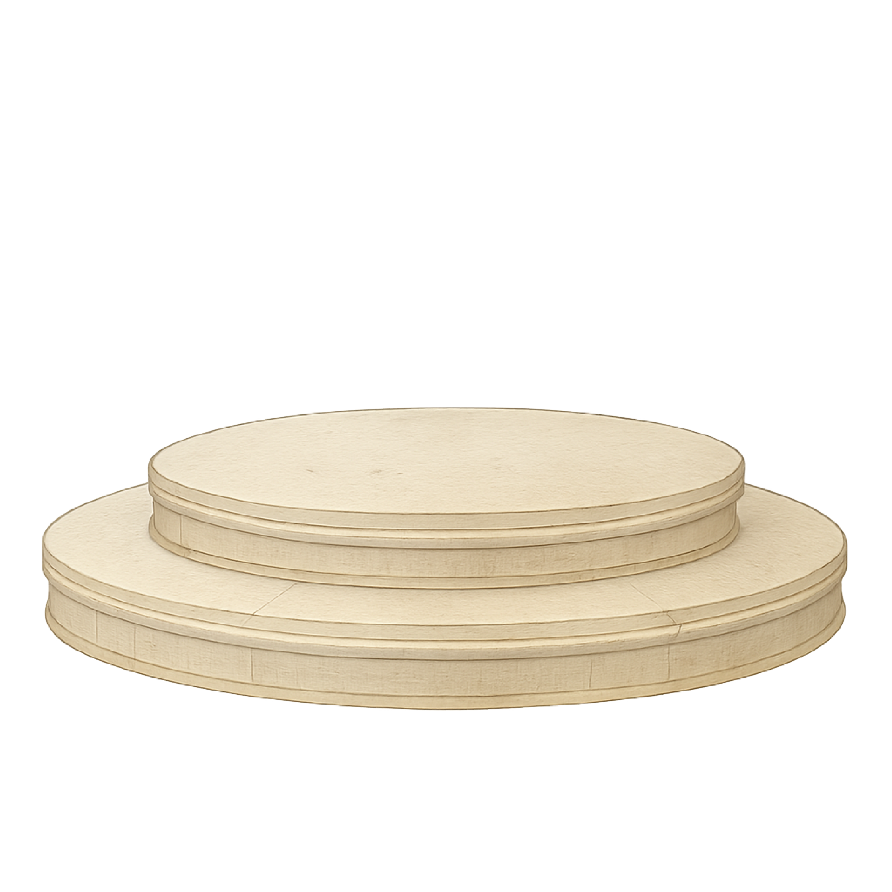
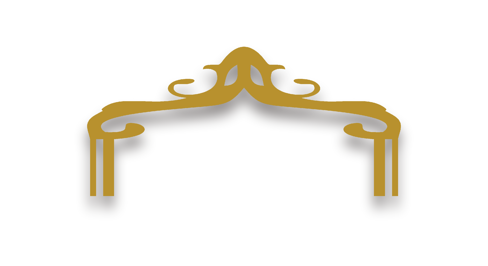
"Dan di atas semuanya itu: kenakanlah kasih, sebagai pengikat yang mempersatukan dan menyempurnakan."
Kolose 3:14
We're Getting Married!
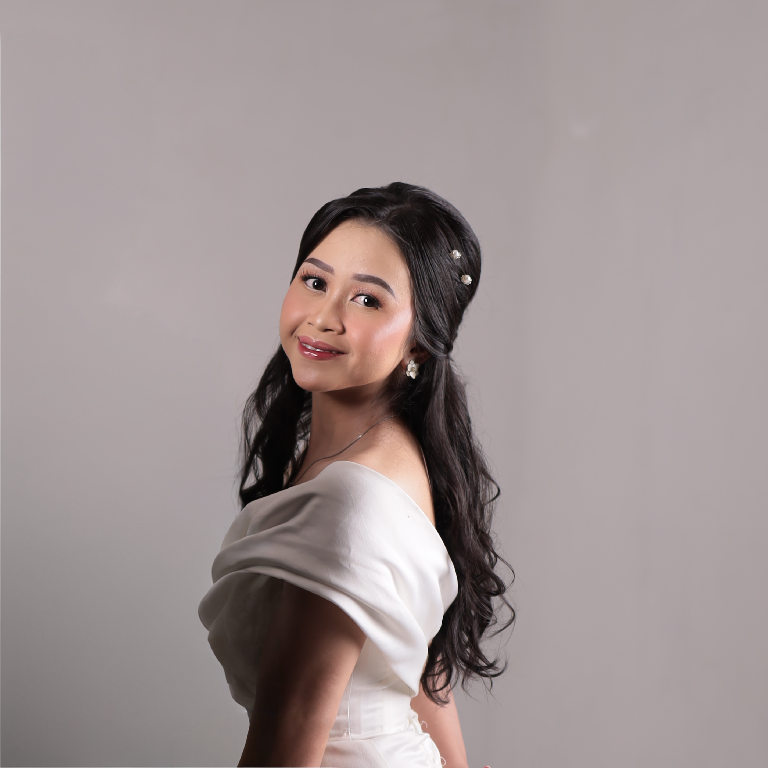
Isabella Carissa Fibriyanti
Putri kedua dari Bapak FX Nur Santoso & Ibu Christina Sudarmi
@issabellacfKisah Kami Berdua
Awal hubungan
Kami bertemu di sebuah acara dimana kami sama-sama pemalu, hanya saling tersenyum tanpa berani menyapa. Awal yang sederhana itu menjadi sesuatu yang berarti tanpa kami sadari.
Kencan pertama
Kencan pertama kami sebagai pasangan di sebuah angkringan. Makanan sederhana, canda dan tawa. Kami merasa cocok.
Perjalanan Pertama ke Jogja
Jogja menjadi tujuan perjalanan pertama kami bersama. Kami mengunjungi beberapa tempat indah dan mengukir kenangan kami sebagai pasangan.
Pertunangan
Dengan hati yang penuh cinta dan harapan, kami berdua memantapkan hati. Hari itu menjadi langkah awal kami menuju kehidupan bersama sebagai satu.
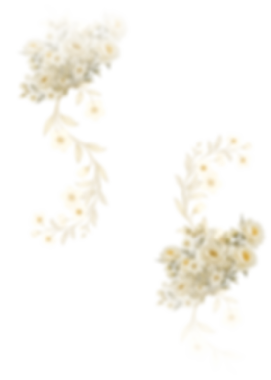
Holy Matrimony
Penerimaan Sakramen Pernikahan
Akan saling menerima Sakramen Pernikahan pada:
🗓️ Sabtu, 26 Juli 2025
⛪ Gereja St. Yohanes Rasul Kedaton
🕚 Pukul 11.00 WIB
📍 Jl. Tupai No.49, Sidodadi, Kec. Kedaton, Kota Bandar Lampung, Lampung 35123
Buka Peta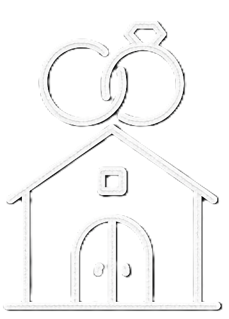
Wedding Hall
Resepsi Pernikahan
Dilanjutkan dengan acara resepsi pada:
🗓️ Sabtu, 26 Juli 2025
🏛️ GSG Gentiaras, Komplek Way Halim
🕑 Pukul 14.00 WIB
📍 Way Halim Permai, Way Halim, Bandar Lampung City, Lampung
Buka PetaOur Gallery

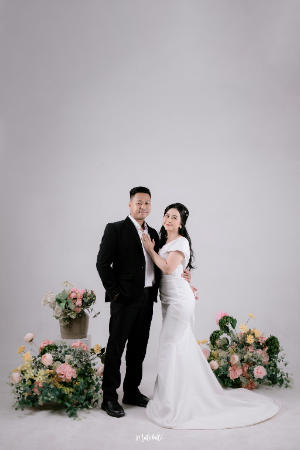
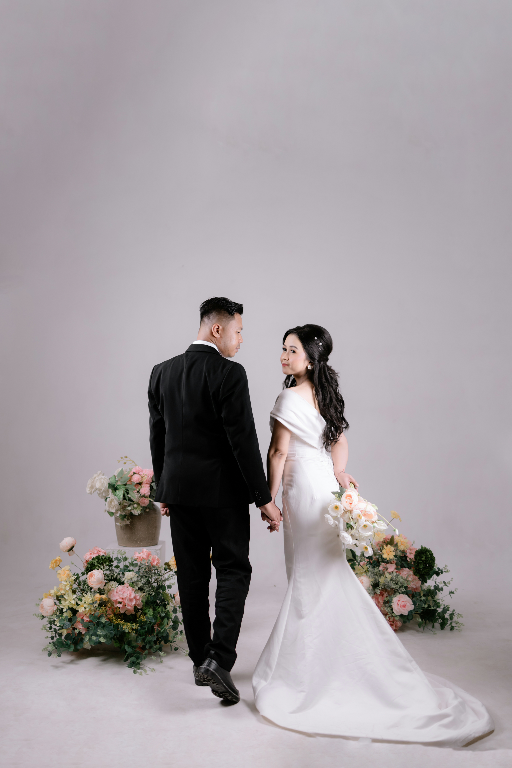


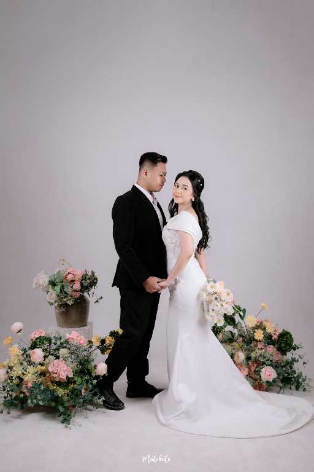

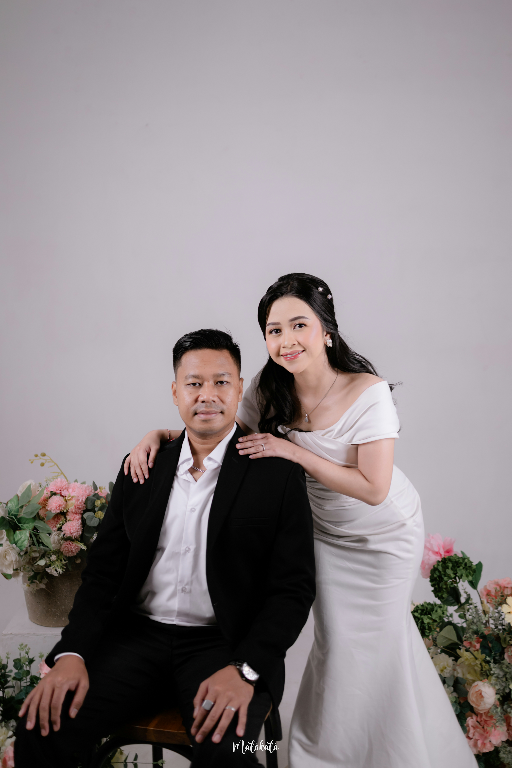


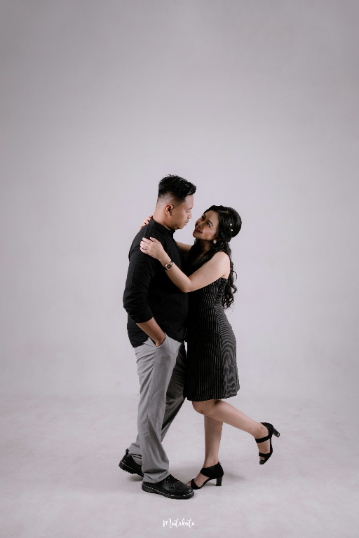
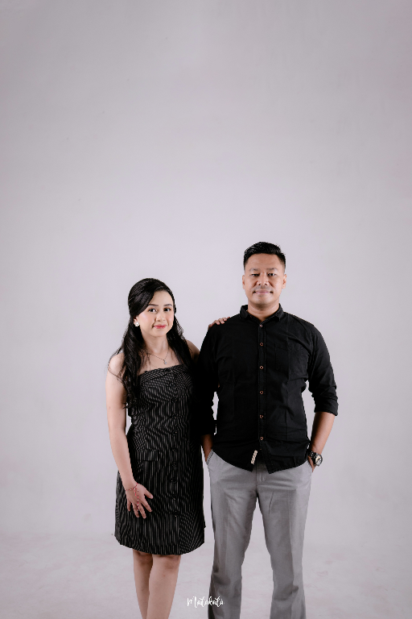
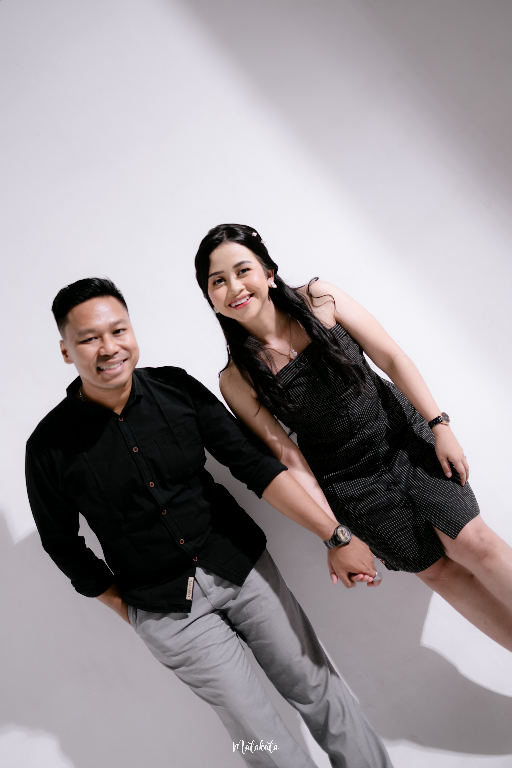
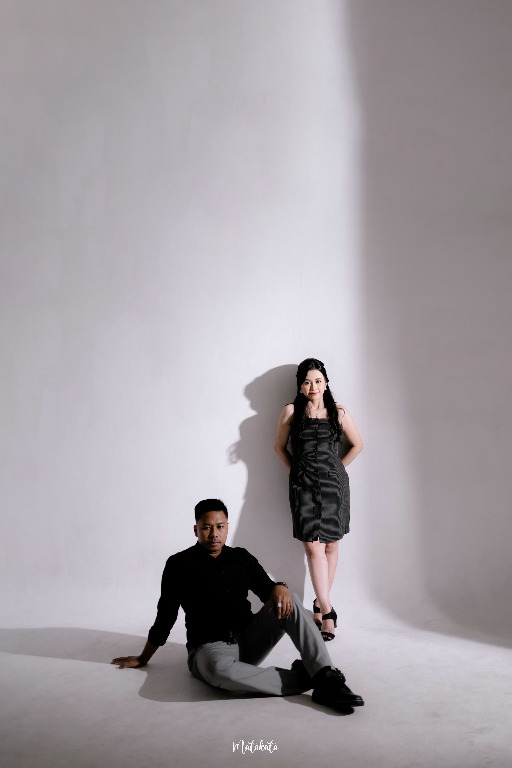
Kado Digital
Kehadiran Bapak/Ibu/Saudara/i merupakan hadiah terbaik bagi kami.
Tetapi jika memberi merupakan tanda kasih, kami dengan senang hati menerimanya.
Semoga kebaikan, keberkahan dan kesehatan selalu diberikan kepada kita semua.
9000045413185
a.n : KRISTIYANTO
1140025737605
a.n : ISABELLA CARISSAF
Kirim Ucapan
Konfirmasi Kehadiran:
"Whatever our souls are made of, his and mine are the same."
— Emily Brontë